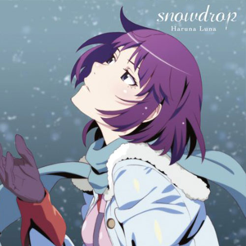

Snowdrop
心臓に合わせて
本当の気持ちを 自分らしく さぁ話そう
平凡な金曜日
落ち込んだ毎日は
不安と後悔の連続
作戦を考えて
「この気持ちどうやって言おうかな」
って今日も終わる
君の目が泳いだら
不安でしょうがないんだよ
「嫉妬しちゃう嫌だ嫌だ」って渦巻いて
たまらないんだ
ホントはね ずっと君と
二人だけが 良かったんだ
『純粋なアイのコトバ』
笑わないでよ ねぇ
きっとまた そんな君を
「諦めてやるもんか」って
必死に答を探す
馬鹿みたいだね あぁ
余裕なんてないんだよ
迂闊に話せない
溜め息をついて さぁリセットしよう
出来合いの言葉で
飾った想いなんて
2%も伝わらない
「本当の心」を言葉にしようとして
「気取ってないか」って 落ち込む
おどけた態度取ってさ
君は変わらないよね
ホント解らない
何で君ばっか気にしちゃうんだ
最初から こんな心
知らなければ 良かったんだ
『繊細なアイのコトバ』
いなくなってよ あぁ
きっとまたこの気持ちが
私を苦しめたって
ホントの想いは消えない
知ってるけど あぁ
とめどない溜め息
繰り返しても ほら
「まだまだ」って立ってるんでしょ
あの日 あの時に 何かが生まれたから
きっとまた 辛い事だって
あるのも当然
「あのね、ホントはね」
涙を隠しながら
絶対に諦めないように、
息を吸い込む
「ホントはね、ずっとずっと言えなく
て 寂しかったんだ」
心臓が エールを送る
このまま「ホントだよ、ずっとずっと
二人だけで いたかったんだ」
『純粋なアイのコトバ』
やっと会えたね あぁ
最初から この気持ちが
君だけに 向いてるんだって
真剣な恋の行方
どうなるんだろう
ねぇ、目と目を合わせたら
怖がらずに ほら
話してみよう 自分だけの 心を